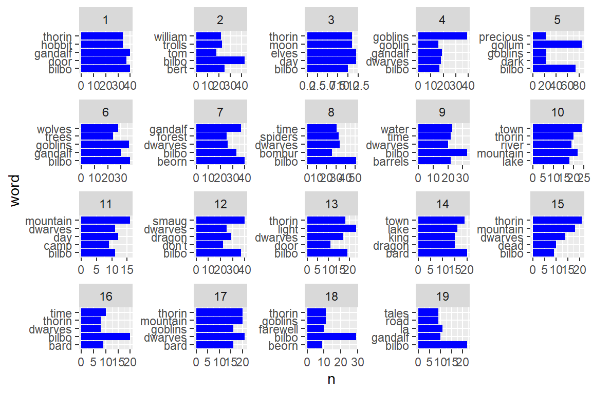
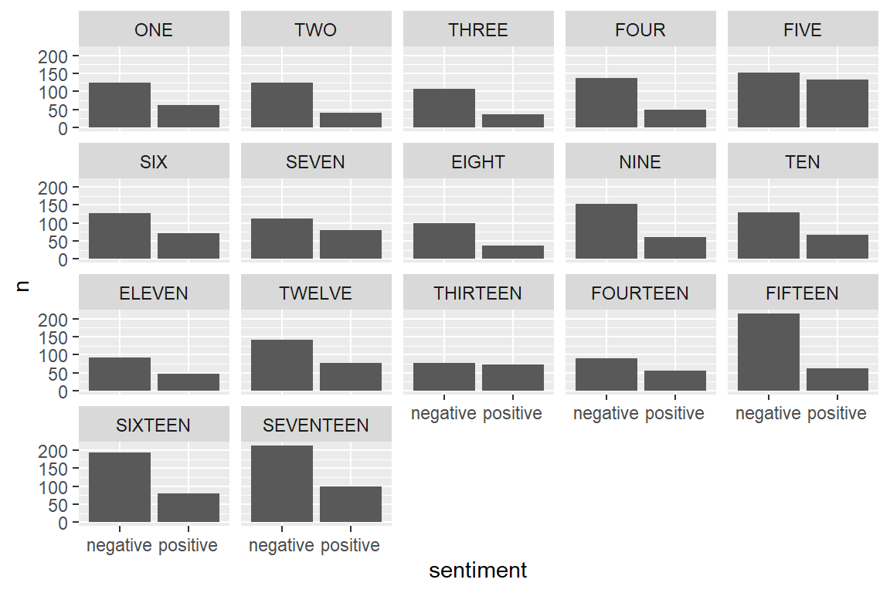
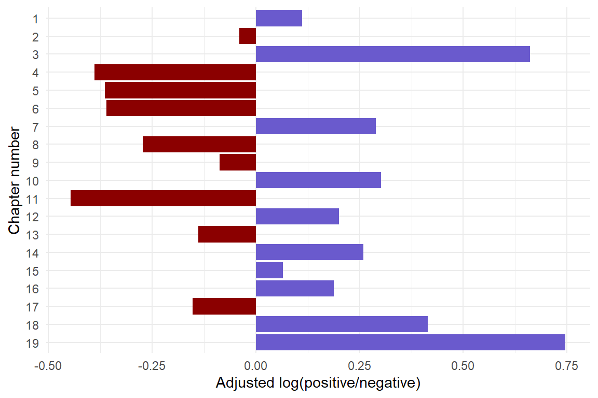
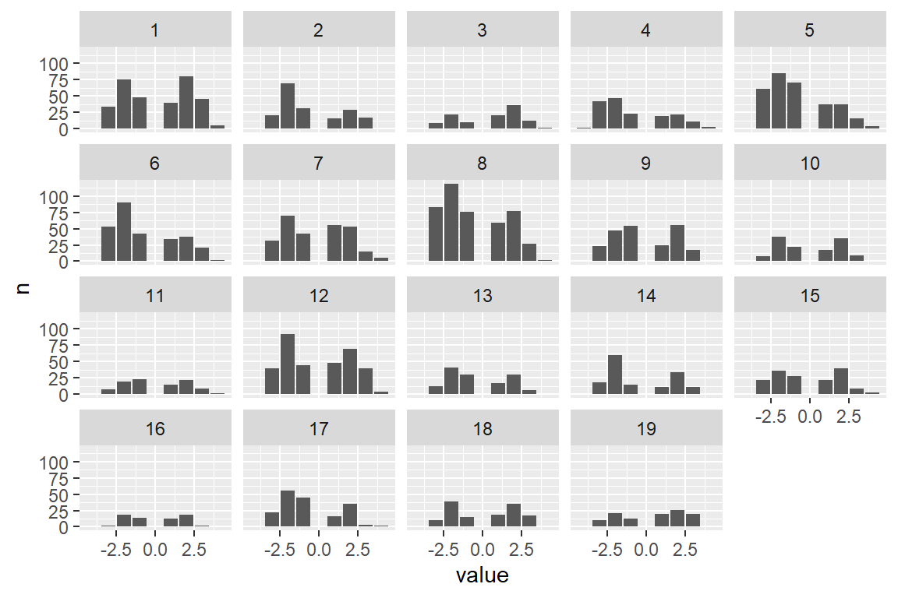
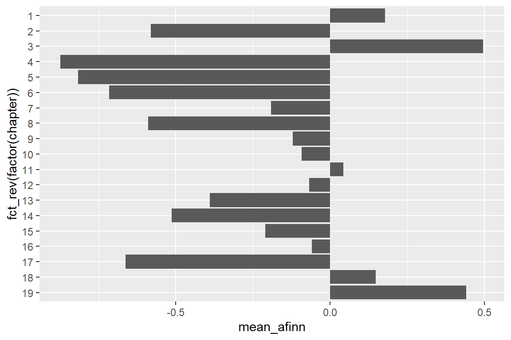
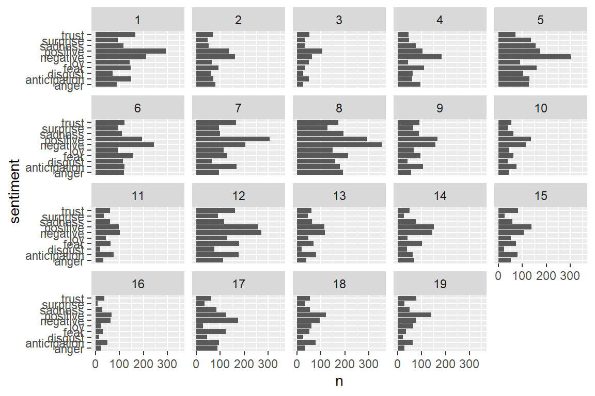
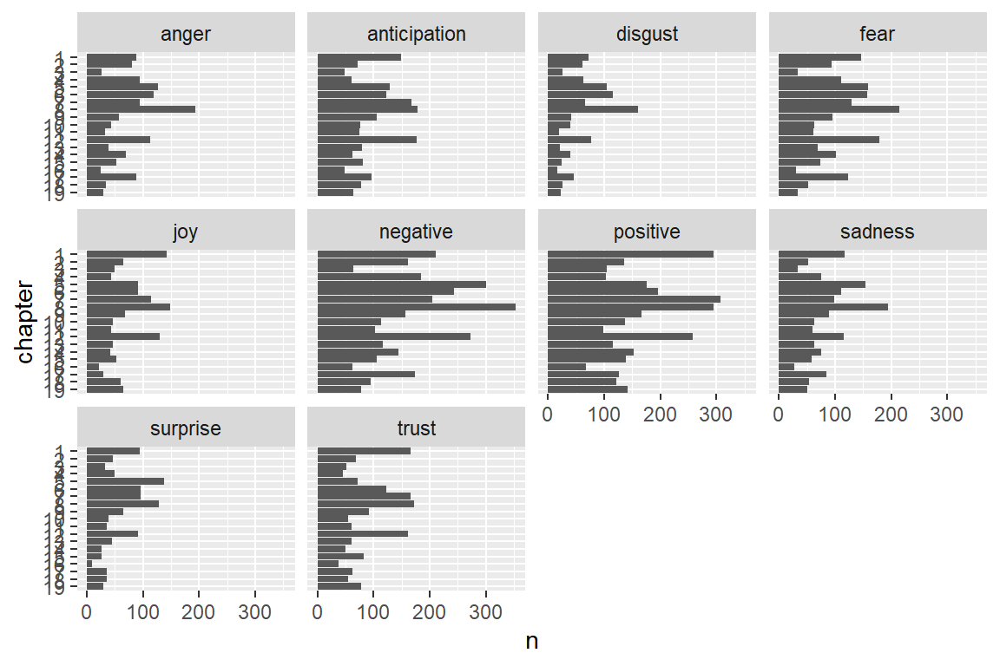

library(tidyverse)
library(tidytext)
library(textdata)
library(pdftools)
library(ggwordcloud)Text analysis workshop: Basic sentiment analysis
Overview
Sentiment analysis is a fairly basic way to get a sense of the mood of a piece of text. In an eco-data-science sense, we can use sentiment analysis to understand perceptions of topics in environmental policy.
A good example is “Public Perceptions of Aquaculture: Evaluating Spatiotemporal Patterns of Sentiment around the World” by local celebrities Halley Froehlich, Becca Gentry, and Ben Halpern, in which they examine public pereptions of aquaculture by performing sentiment analyses on newspaper headlines from around the globe and government-solicited public comments on aquaculture policy and development. This paper is included in the ‘pdfs’ folder on Github, or available here: http://journals.plos.org/plosone/article?id=10.1371/journal.pone.0169281
Another popular use of sentiment analysis is to determine the mood of Twitter comments. One excellent example is an examination of Trump tweets, which noted that tweets from an iPhone and an Android phone were markedly different in tone; the thought was that the Android account (with generally far more positive tweets) was run by a staffer while the iPhone (with generally more negative tweets) was Trump’s personal tweets. See: http://varianceexplained.org/r/trump-tweets/
Sentiment analysis example: The Hobbit
Read in The Hobbit text from pdf
hobbit_text <- pdf_text(here::here('pdfs', 'the-hobbit.pdf'))- Each row is a page of the PDF (i.e., this is a vector of strings, one for each page)
- Only sees text that is “selectable”
Example: Just want to get text from a single page (e.g. Page 34)?
hobbit_p34 <- hobbit_text[34]pdf_text() returns a vector of strings, one for each page of the pdf. So we can mess with it in tidyverse style, let’s turn it into a dataframe, and keep track of the pages. Then we can use stringr::str_split() to break the pages up into individual lines. Each line of the pdf is concluded with a backslash-n, so split on this. We will also add a line number in addition to the page number.
Let’s first get it into a data frame. Then we’ll do some wrangling with the tidyverse, break it up by chapter, and do some analyses.
hobbit_lines <- data.frame(hobbit_text) %>%
mutate(page = 1:n()) %>%
mutate(text_full = str_split(hobbit_text, pattern = '\\n')) %>%
unnest(text_full) %>%
mutate(text_full = str_trim(text_full))
# Why '\\n' instead of '\n'? Because some symbols (e.g. \, *) need to be called literally with a starting \ to escape the regular expression. For example, \\a for a string actually contains literally \a. So the string that represents the regular expression '\n' is actually '\\n'.
# More information: https://cran.r-project.org/web/packages/stringr/vignettes/regular-expressions.htmlDo some tidying
Now, we’ll add a new column that contains the Chapter number (so we can use this as a grouping variable later on).
We will use str_detect() to look for any cells in “text_full” column that contains the string “Chapter”, and if it does, the new column will contain that chapter number:
hobbit_chapts <- hobbit_lines %>%
slice(-(1:137)) %>%
mutate(chapter = ifelse(str_detect(text_full, "Chapter"), text_full, NA)) %>%
fill(chapter, .direction = 'down') %>%
separate(col = chapter, into = c("ch", "num"), sep = " ") %>%
mutate(chapter = as.numeric(as.roman(num)))Get some word counts by Chapter!
hobbit_words <- hobbit_chapts %>%
unnest_tokens(word, text_full) %>%
select(-hobbit_text)hobbit_wordcount <- hobbit_words %>%
count(chapter, word)…OK, but check out which words show up the most. They’re probably not words we’re super interested in (like “a”, “the”, “and”). How can we limit those?
Remove stop words
Those very common (and often uninteresting) words are called “stop words.” See ?stop_words and View(stop_words)to look at documentation for stop words lexicons (from the tidytext package).
We will remove stop words using tidyr::anti_join(), which will omit any words in stop_words from hobbit_tokens.
head(stop_words)# A tibble: 6 × 2
word lexicon
<chr> <chr>
1 a SMART
2 a's SMART
3 able SMART
4 about SMART
5 above SMART
6 according SMART hobbit_words_clean <- hobbit_words %>%
anti_join(stop_words, by = 'word')Then let’s try counting them again:
nonstop_counts <- hobbit_words_clean %>%
count(chapter, word)Find the top 5 words from each chapter
top_5_words <- nonstop_counts %>%
group_by(chapter) %>%
arrange(-n) %>%
slice(1:5) %>%
ungroup()
# Make some graphs:
ggplot(data = top_5_words, aes(x = n, y = word)) +
geom_col(fill = "blue") +
facet_wrap(~chapter, scales = "free")
Let’s make a word cloud for Chapter 1
ch1_top100 <- nonstop_counts %>%
filter(chapter == 1) %>%
arrange(-n) %>%
slice(1:100)ch1_cloud <- ggplot(data = ch1_top100, aes(label = word)) +
geom_text_wordcloud(aes(color = n, size = n), shape = "diamond") +
scale_size_area(max_size = 6) +
scale_color_gradientn(colors = c("darkgreen","blue","purple")) +
theme_minimal()
ch1_cloud
How do sentiments change over the course of the book?
First, check out the ‘sentiments’ lexicon. From Julia Silge and David Robinson (https://www.tidytextmining.com/sentiment.html):
“The three general-purpose lexicons are
- AFINN from Finn Årup Nielsen,
- bing from Bing Liu and collaborators, and
- nrc (National Research Council Canada) from Saif Mohammad and Peter Turney
All three of these lexicons are based on unigrams, i.e., single words. These lexicons contain many English words and the words are assigned scores for positive/negative sentiment, and also possibly emotions like joy, anger, sadness, and so forth. The nrc lexicon categorizes words in a binary fashion (“yes”/“no”) into categories of positive, negative, anger, anticipation, disgust, fear, joy, sadness, surprise, and trust. The bing lexicon categorizes words in a binary fashion into positive and negative categories. The AFINN lexicon assigns words with a score that runs between -5 and 5, with negative scores indicating negative sentiment and positive scores indicating positive sentiment. All of this information is tabulated in the sentiments dataset, and tidytext provides a function get_sentiments() to get specific sentiment lexicons without the columns that are not used in that lexicon.”
Let’s explore the sentiment lexicons. “bing” included, other lexicons (“afinn”, “nrc”, “loughran”) you’ll be prompted to to download.
WARNING: These collections include the most offensive words you can think of.
“afinn”: Words ranked from -5 (very negative) to +5 (very positive)
afinn_lex <- get_sentiments(lexicon = "afinn")
### you may be prompted to download an updated lexicon - say yes!
# Let's look at the pretty positive words:
afinn_pos <- get_sentiments("afinn") %>%
filter(value %in% c(3,4,5))
# Check them out:
DT::datatable(afinn_pos)For comparison, check out the bing lexicon:
bing_lex <- get_sentiments(lexicon = "bing")And the nrc lexicon:https://saifmohammad.com/WebPages/NRC-Emotion-Lexicon.htm Includes bins for 8 emotions (anger, anticipation, disgust, fear, joy, sadness, surprise, trust) and positive / negative.
Citation for NRC lexicon: Crowdsourcing a Word-Emotion Association Lexicon, Saif Mohammad and Peter Turney, Computational Intelligence, 29 (3), 436-465, 2013.
Now nrc:
nrc_lex <- get_sentiments(lexicon = "nrc")Sentiment analysis with bing:
First, bind words in hobbit_nonstop_words to bing lexicon:
hobbit_bing <- hobbit_words_clean %>%
inner_join(bing_lex, by = 'word')Let’s find some counts of positive vs negative:
bing_counts <- hobbit_bing %>%
# group_by(chapter, sentiment) %>%
# summarize(n = n())
count(chapter, sentiment)
# Plot them:
ggplot(data = bing_counts, aes(x = sentiment, y = n)) +
geom_col() +
facet_wrap(~chapter)
# find log ratio score overall:
bing_log_ratio_book <- hobbit_bing %>%
summarize(n_pos = sum(sentiment == 'positive'),
n_neg = sum(sentiment == 'negative'),
log_ratio = log(n_pos / n_neg))
# Find the log ratio score by chapter:
bing_log_ratio_ch <- hobbit_bing %>%
group_by(chapter) %>%
summarize(n_pos = sum(sentiment == 'positive'),
n_neg = sum(sentiment == 'negative'),
log_ratio = log(n_pos / n_neg)) %>%
mutate(log_ratio_adjust = log_ratio - bing_log_ratio_book$log_ratio) %>%
mutate(pos_neg = ifelse(log_ratio_adjust > 0, 'pos', 'neg'))
ggplot(data = bing_log_ratio_ch,
aes(x = log_ratio_adjust,
y = fct_rev(factor(chapter)),
fill = pos_neg)) +
# y = fct_rev(as.factor(chapter)))) +
geom_col() +
labs(x = 'Adjusted log(positive/negative)',
y = 'Chapter number') +
scale_fill_manual(values = c('pos' = 'slateblue', 'neg' = 'darkred')) +
theme_minimal() +
theme(legend.position = 'none')
Sentiment analysis with afinn (not run in workshop):
First, bind words in hobbit_nonstop_words to afinn lexicon:
hobbit_afinn <- hobbit_words_clean %>%
inner_join(afinn_lex, by = 'word')Let’s find some counts (by sentiment ranking):
afinn_counts <- hobbit_afinn %>%
group_by(chapter, value) %>%
summarize(n = n())
# Plot them:
ggplot(data = afinn_counts, aes(x = value, y = n)) +
geom_col() +
facet_wrap(~chapter)
# Find the mean afinn score by chapter:
afinn_means <- hobbit_afinn %>%
group_by(chapter) %>%
summarize(mean_afinn = mean(value))
ggplot(data = afinn_means,
aes(x = fct_rev(factor(chapter)),
y = mean_afinn)) +
# y = fct_rev(as.factor(chapter)))) +
geom_col() +
coord_flip()
Now with NRC lexicon (not run in workshop)
Recall, this assigns words to sentiment bins. Let’s bind our hobbit data to the NRC lexicon:
hobbit_nrc <- hobbit_words_clean %>%
inner_join(get_sentiments("nrc"))Let’s find the count of words by chapter and sentiment bin:
hobbit_nrc_counts <- hobbit_nrc %>%
count(chapter, sentiment)
ggplot(data = hobbit_nrc_counts, aes(x = n, y = sentiment)) +
geom_col() +
facet_wrap(~chapter)
### perhaps order or color the sentiments by positive/negative
ggplot(data = hobbit_nrc_counts, aes(x = n,
y = factor(chapter) %>%
fct_rev())) +
geom_col() +
facet_wrap(~sentiment) +
labs(y = 'chapter')
NOTE:
This is a very simple sentiment analysis. The sentimentr package (https://cran.r-project.org/web/packages/sentimentr/index.html) seems to be able to parse things at the sentence level, accounting for negations etc. (e.g. “I am not having a good day.”)